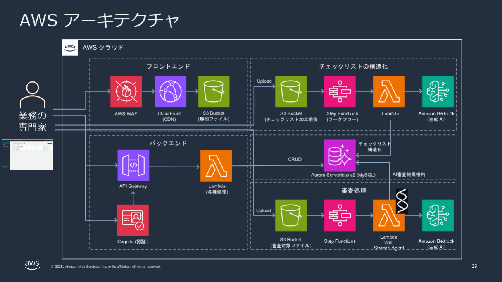
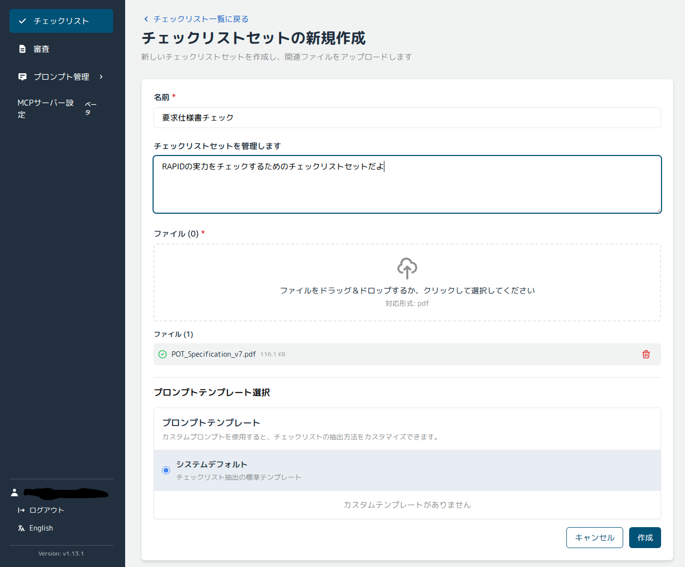

AWSのRAPIDを使って書類審査を自動化するトライ（セットアップ編）
■RAPIDとは
RAPID = Review & Assessment Powered by Intelligent Documentation
AIを活用して、書類審査の効率化をサポートするソリューション。
行政機関向けの申請書などのチェックに使えるかな？
公式PDFのアーキテクチャはこんなイメージ。業務で使えるかもしれない。早速検証。
■やってみる
用意する資料
（１）要求仕様書のサンプル
今回はこの要求仕様書の書類チェックをやってみる。
https://www.sessame.jp/workinggroup/WorkingGroup2/POT_Specification_v7.PDF（２）サービスセットアップ
- AWS Management ConsoleでBedrockを有効化しておく。
- リージョンは us-west-2 を使用。
- モデルは
anthropic.claude-haiku-4-5-20251001-v1:0を使う。
※このモデルは料金ページに料金が載っていなかった - CloudShellを開く。
- 公式のサンプルスクリプトを実行する。参考ページは以下。
https://github.com/aws-samples/review-and-assessment-powered-by-intelligent-documentation
# IPを自分の環境に合わせて設定
# IP4="$(curl -4 -s ifconfig.me)/32"
IP4="<YOUR_PUBLIC_IP/32>" # 例: 203.0.113.10/32 など
wget -O - https://raw.githubusercontent.com/aws-samples/review-and-assessment-powered-by-intelligent-documentation/main/bin.sh \
| bash -s -- \
--ipv4-ranges "[\"$IP4\"]" \
--cognito-self-signup false \
--auto-migrate false \
--bedrock-region us-west-2 \
--document-model "us.anthropic.claude-haiku-4-5-20251001-v1:0" \
--image-model "us.anthropic.claude-haiku-4-5-20251001-v1:0"■結果（CloudShellの実行ログ抜粋）
~ $ IP4="<YOUR_PUBLIC_IP/32>"
~ $
~ $ wget -O - https://raw.githubusercontent.com/aws-samples/review-and-assessment-powered-by-intelligent-documentation/main/bin.sh \
> | bash -s -- \
> --ipv4-ranges "[\"$IP4\"]" \
> --cognito-self-signup false \
> --auto-migrate false \
> --bedrock-region us-west-2 \
> --document-model "us.anthropic.claude-haiku-4-5-20251001-v1:0" \
> --image-model "us.anthropic.claude-haiku-4-5-20251001-v1:0"
--2025-11-01 18:04:46-- https://raw.githubusercontent.com/aws-samples/review-and-assessment-powered-by-intelligent-documentation/main/bin.sh
Resolving raw.githubusercontent.com (raw.githubusercontent.com)... <omitted>
Connecting to raw.githubusercontent.com ... connected.
HTTP request sent, awaiting response... 200 OK
Length: 7687 (7.5K) [text/plain]
Saving to: 'STDOUT'
...
---------------------------------------------------------------------------
🎉 Deployment completed successfully!
---------------------------------------------------------------------------
Frontend URL: <https://xxxxxxxxxxxxxxxx.cloudfront.net>
---------------------------------------------------------------------------（３）環境変数の設定
EMAIL="your_mail@your_domain"
# User Pool ID（OutputKeyに "UserPoolId" を含むもの）
POOL_ID=$(aws cloudformation describe-stacks \
--region us-west-2 --stack-name RapidStack \
--query "Stacks[0].Outputs[?contains(OutputKey, 'UserPoolId')].OutputValue" \
--output text)
echo "POOL_ID=$POOL_ID"
# User Pool Client ID（"ClientId" を含むもの）
CLIENT_ID=$(aws cloudformation describe-stacks \
--region us-west-2 --stack-name RapidStack \
--query "Stacks[0].Outputs[?contains(OutputKey, 'ClientId')].OutputValue" \
--output text)
echo "CLIENT_ID=$CLIENT_ID"
# （このセッションだけ us-west-2 を既定にしたいなら）
export AWS_DEFAULT_REGION=us-west-2（４）ユーザー作成
# 1) 管理者ユーザー作成
aws cognito-idp admin-create-user \
--user-pool-id "$POOL_ID" \
--username "$EMAIL" \
--temporary-password '<TEMP_PASSWORD>' \
--message-action SUPPRESS \
--user-attributes Name=email,Value="$EMAIL" Name=email_verified,Value=true
# 2) 一時PWを恒久パスワードに変更
aws cognito-idp admin-set-user-password \
--user-pool-id "$POOL_ID" \
--username "$EMAIL" \
--password '<PERMANENT_PASSWORD>' \
--permanent（５）ログイン
デプロイ成功時に出力される Frontend URL に接続し、ログイン画面からログイン成功。
チェックリストを新規作成
（６）問題発生、そして次回へ
チェックリストのチェックが終わらない。
これは、待っていれば終わるのか？それとも内部的に解析が失敗している？
LLMに任せるチェックだけではなく、数値計算など厳密なチェックは
Lambdaで行えばいいのかな？AIとそれ以外の連携を行って審査するところまで検証したい。